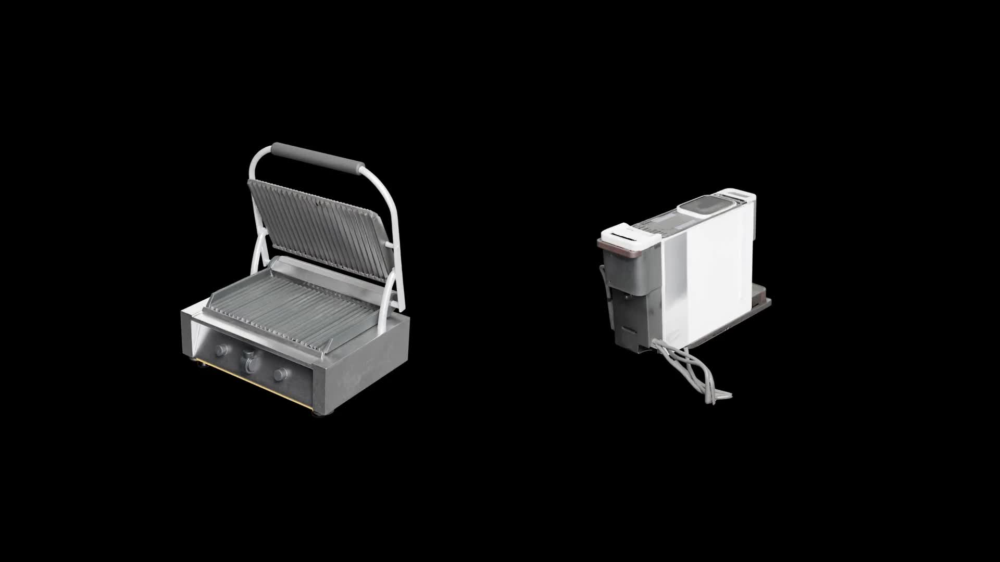

部件感知三维生成 · 2026
SCULPT: Subtractive Composition for 3D Part Generation
arXiv，2026

一句话概述
SCULPT 从完整三维物体出发，反复提取一个结构完整的部件并同步生成剩余部分，从而得到数量自适应、共享边界一致且便于编辑的三维部件。
摘要
部件感知三维生成不仅需要产生完整连贯的物体，还要显式给出可用于编辑、材质赋予、动画和复用的结构部件。以往方法通常在物体生成后进行分割，或按照预设布局分别生成部件，容易过早固定边界，或造成部件之间的缝隙、穿插与材质不连续。SCULPT 将这一任务表述为结构化三维潜空间中的减法式组合：每一步由联合分割预测器同步生成一个被提取部件和更新后的剩余物体，并同时以输入图像和当前三维状态为条件进行去噪。两个输出在原生稀疏支撑的并集上联合处理，使相邻区域可以重叠，而不必被强制划分为互斥体素。生成在剩余支撑为空或达到安全上限时结束，因此部件数量可以随物体自适应变化。实验表明，该方法在 PartObjaverse 上取得领先的几何质量，同时保持良好的整体重组效果，并能处理基准图像、生成图像和真实照片中的细粒度纹理部件。
主要贡献
- 提出用于自适应部件感知三维生成的减法式组合范式。
- 在结构化三维潜空间中联合预测提取部件及其剩余物体。
- 在支持纹理部件分解的同时保持高质量的完整物体重组。
引用
@article{li2026sculpt,
title={SCULPT: Subtractive Composition for 3D Part Generation},
author={Li, Sikuang and Yang, Chen and Fang, Jiemin and Cen, Jiazhong and Wei, Yuhe and Pang, Jichen and Shen, Wei and Tian, Qi},
journal={arXiv preprint arXiv:2608.13541},
year={2026},
doi={10.48550/arXiv.2608.13541}
}